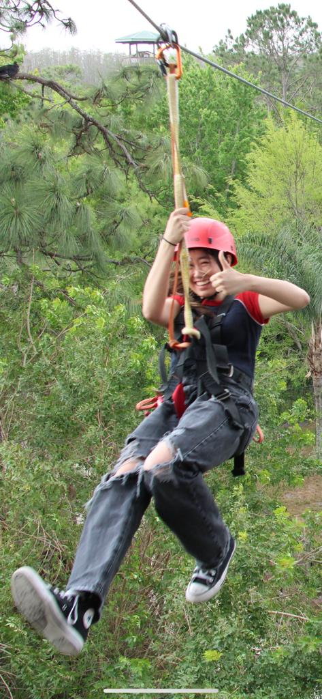
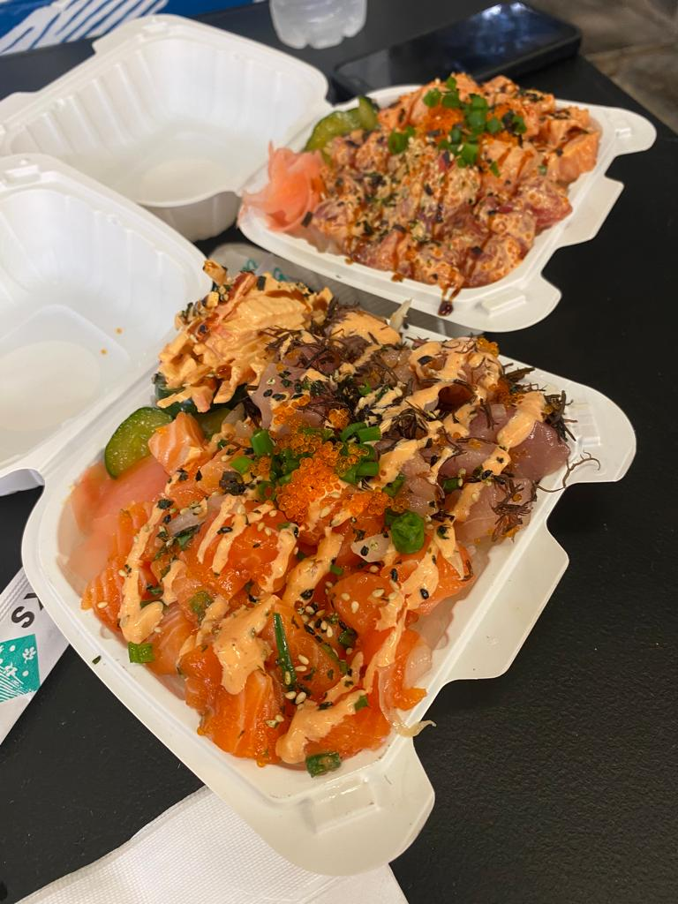
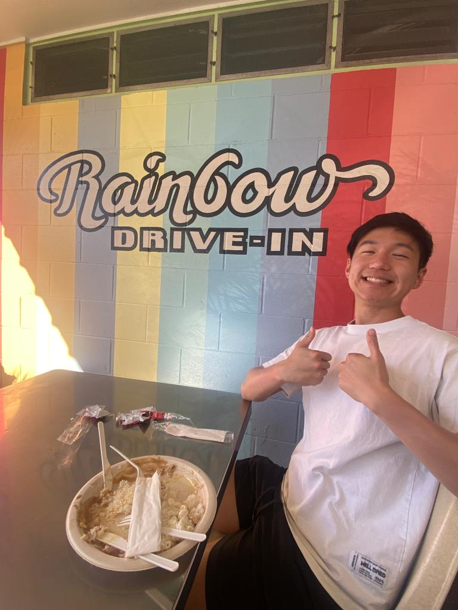

🏰 Adventure
I absolutely love adventure. There is something exhilarating and transformative about stepping out of your comfort zone and exploring new places, cultures, and landscapes. My recent trip to Hawaii, Orlando, and Alaska was a testament to my passion for adventure. In Hawaii, I was mesmerized by the stunning beaches, lush rainforests, and active volcanoes. It was an adventure filled with snorkeling in crystal-clear waters, hiking to waterfalls, and immersing myself in the rich Hawaiian culture. The thrill of exploring an entirely different world and experiencing the aloha spirit was an unforgettable adventure that left me craving for more.
Orlando, on the other hand, offered a different kind of adventure - one filled with magical experiences at theme parks and the wonder of childhood nostalgia. The joy of riding roller coasters, meeting beloved characters, and witnessing incredible shows was a unique adventure that brought out the kid in me. Lastly, Alaska provided the ultimate wilderness adventure with its rugged landscapes, pristine wilderness, and abundant wildlife. Exploring glaciers, spotting grizzly bears, and cruising through fjords were experiences that connected me with the raw beauty of nature.
These adventures, in Hawaii, Orlando, and Alaska, have solidified my love for adventure, as they have not only enriched my life with incredible memories but also broadened my horizons, reminding me of the endless wonders the world has to offer to those who seek adventure.
🥘 Food
My love for adventure extends to the realm of culinary exploration as well. One of the most delightful aspects of traveling to Hawaii, Orlando, and Alaska was the opportunity to savor an array of delicious and diverse foods unique to each region.
In Hawaii, I fell in love with the vibrant and flavorsome cuisine. From enjoying traditional dishes like poke and lomi-lomi salmon to indulging in the fusion of Asian and Hawaiian flavors, such as the delectable plate lunches and mouthwatering spam musubi, every bite was a celebration of the island's culinary heritage. The tropical fruits like pineapple and coconut, paired with fresh seafood, created a symphony of tastes that left a lasting impression on my palate.
Orlando, with its theme park culture, was a culinary adventure of its own. I delighted in classic American comfort foods like burgers and hot dogs but was equally captivated by the international cuisine offered in Epcot's World Showcase. Trying authentic dishes from countries like Italy, Japan, and Mexico within a single day was a thrilling gastronomic journey, showcasing the diversity of flavors from around the world.
My culinary adventure in Alaska was a testament to the region's focus on seafood. From indulging in succulent Alaskan king crab legs to enjoying wild-caught salmon prepared in various ways, the freshness and quality of the seafood were unparalleled. The hearty Alaskan fare, like reindeer sausage and moose stew, provided a taste of the state's unique culinary traditions, deeply rooted in its rugged wilderness.
👯♀️ People
During my travels to Hawaii, Orlando, and Alaska, I had the privilege of meeting some incredibly kind and welcoming people who made my adventures even more memorable. These encounters added a special dimension to my experiences in each of these places.
In Hawaii, the spirit of aloha was evident in the warmth and friendliness of the locals. Whether it was a chance encounter with a local vendor at a farmer's market, a friendly chat with fellow hikers on the trail, or the welcoming smiles of restaurant staff, I was constantly reminded of the genuine hospitality that characterizes Hawaiian culture. These interactions made me feel like more than just a tourist; I felt like a welcomed guest.
Orlando's theme parks, with their diverse and international staff, provided an opportunity to meet people from all over the world. The employees working at the parks were not only professional but also remarkably patient and helpful, ensuring that visitors like me had a fantastic experience. It was heartwarming to see how they went above and beyond to create magical moments for guests of all ages.
In Alaska, I was struck by the friendliness of the locals in a vast and remote wilderness. Whether it was a conversation with a fisherman in a small coastal village or the warm welcome at a rustic lodge, Alaskans displayed a genuine interest in sharing their culture and love for the wilderness. Their stories, advice, and acts of kindness made my time in Alaska truly unforgettable.